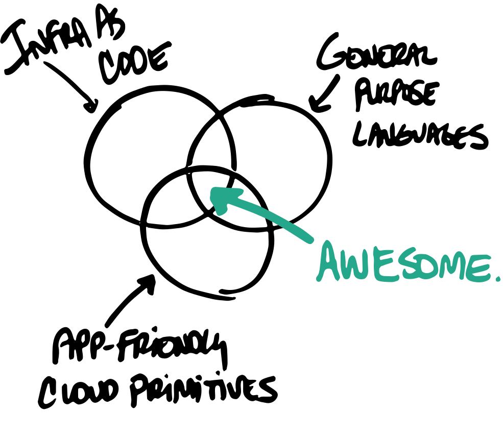
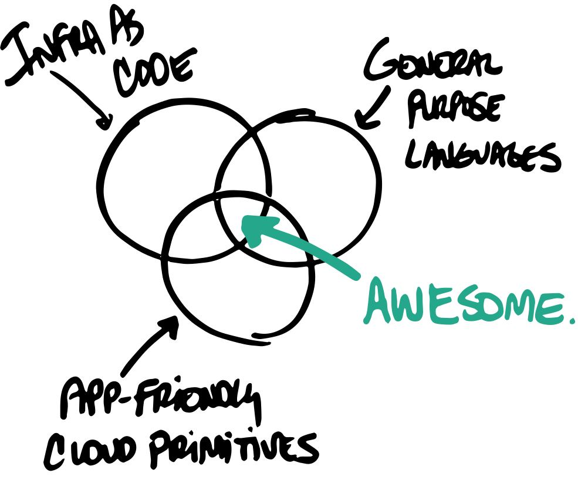

👋 Christian Nunciato
Programming the Cloud with JavaScript
Infrastructure as Code
😬
Can't see what's inside.
Can't duplicate it.
Can't scale it out easily.
Can't recover from disaster.
🧰 Types of Tools
⚙️ Configuration management
☁️ Provisioning
⚙️ Config-management tools
Chef (Ruby)
Puppet (Puppet Language)
Ansible (YAML)
SaltStack (YAML)
☁️ ️️Provisioning tools
Terraform (HashiCorp Config Language)
AWS CloudFormation (YAML)
Azure Resource Manager (JSON)
✅ Commonalities
They're declarative: We express the what, and the tools determine the how.
They're idempotent: Given an input, we get the same result, however many times we run it.
 


AWS Cloud Development Kit

Pulumi
What we just did, there:
We built an event-driven, serverless application that blends cloud resources and app code into a single JavaScript program.
We programmed the architecture diagram.
🎉